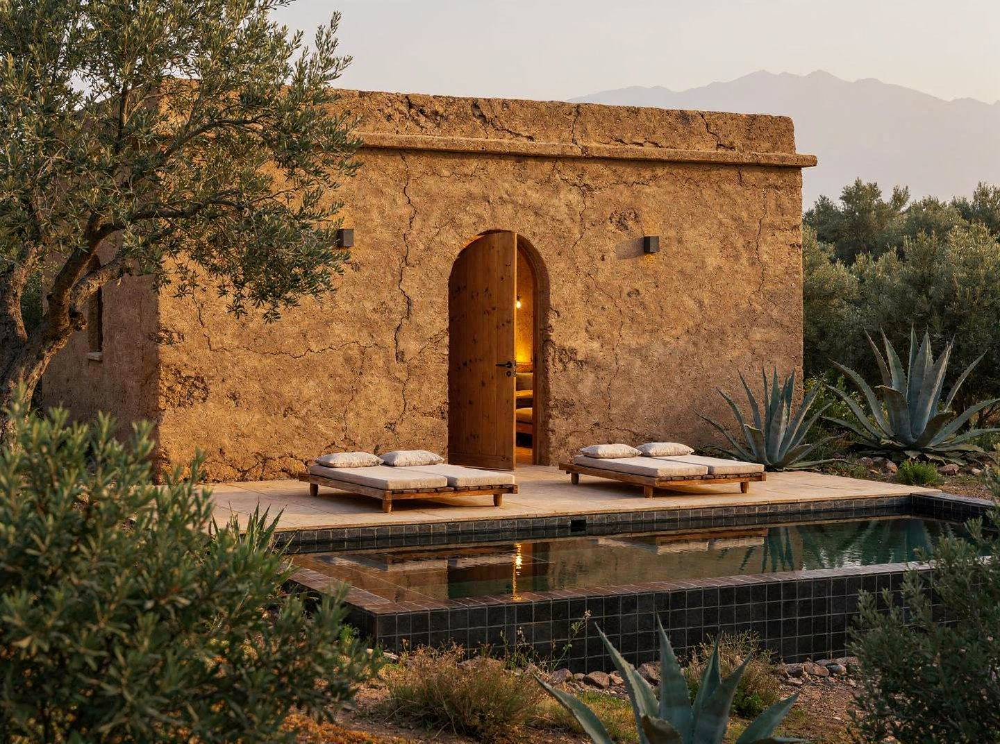
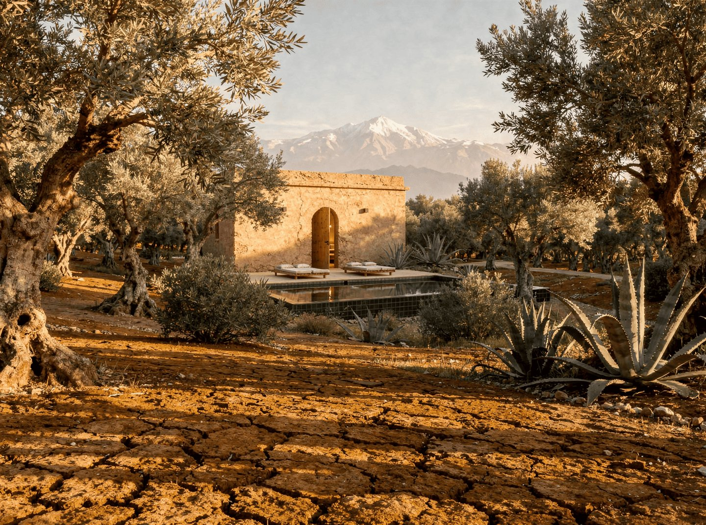

L'image de référence est reproduite ci-dessous. Tout ce qui n'y existerait pas n'existe pas sur ce territoire.

La déclaration est posée. Ce document en est l'expression architecturale et contraignante.
Cette distinction n'est pas rhétorique. Elle détermine chaque décision architecturale. Un hôtel boutique optimise l'expérience client. Une œuvre qui fonctionne comme hôtel crée les conditions d'une expérience que le client ne peut pas anticiper et que l'architecte ne peut pas sur-designer.
Ce que l'architecture doit faire ici : créer les conditions du silence, de la lumière juste, de l'espace qui laisse respirer. Ce qu'elle ne doit pas faire : signifier, expliquer, rassurer, décorer. La beauté n'est pas une addition, c'est le résultat d'une précision matérielle.
Un territoire fermé sur l'extérieur, ouvert sur lui-même. Cinq clusters de mini-riads en pisé, chacun presque aveugle sur l'extérieur, fermé sur une cour intérieure privée avec piscine. Un bâtiment principal rénové qui accueille la vie collective, restaurant, galerie, bar, terrasse. Un Studio Leroy Brothers, lieu de travail effectif. Un jardin de 5 hectares autour d'une oliveraie existante. La Route de Fès, le Haouz, l'Atlas à l'horizon.
| Coordonnées | 31.680678°N / 7.795167°W |
| Surface totale | 50 000m² (5 ha) |
| Titre Foncier | Confirmé, aucun risque VNA |
| Localisation | Route de Fès, avant Farasha Farmhouse |
| Distance Marrakech | 25-30 min (route droite, bien goudronnée) |
| Distance aéroport | 40 min (Ménara) |
| Altitude | ~500m (plaine du Haouz) |
| Mur de clôture | 1,6 km, à réfectionner |
| Eau | Puits profond + réservoir d'irrigation |
| Énergie | Hors réseau. Raccordement disponible en secours. |
Ferme marocaine d'environ 1 200m² d'emprise. Cour centrale double hauteur. Murs en pisé existants, à conserver et renforcer. Le bâtiment principal ne sera pas démoli, il sera rénové dans la continuité de son identité : pisé, enduits chaux, bois, interventions contemporaines assumées.
Oliveraie adulte dans la partie sud de la parcelle. Potager muré. Quelques arbres autour du bâtiment principal. La bande nord est nue, à planter progressivement sur 5-7 ans (oliviers, grenadiers, caroubiers). Aucun palmier.
| Période | Conditions |
|---|---|
| Été (juin-sept) | 38-44°C jour. Chergui possible, vent de sable sec, moins de 15% humidité. Nuits ~22°C. |
| Hiver (déc-fév) | 18-22°C jour. Nuits 2-6°C. Gelées possibles. Vent nord-ouest (Alizé) sur plaine ouverte. |
| Printemps | Épisodes Chergui dès mars. 35-40°C possibles en avril. |
| Pluies | 250-280mm/an. Concentrées oct-avril. Orages intenses rares. |
| Ensoleillement | 9-11h/jour en été. 7h en hiver. |
Le pisé à 50cm d'épaisseur offre une inertie thermique de 8-12°C, la différence entre l'extérieur à 42°C et l'intérieur à 30°C en été. La cour intérieure fermée crée un microclimat protégé du Chergui. Ces deux dispositifs rendent les mini-riads habitables et commercialisables 12 mois sur 12.
La propriété est sur une plaine ouverte entre le Haut Atlas (sud) et les Jbilet (nord). La vue sur l'Atlas enneigé (novembre-avril) depuis la terrasse du bâtiment principal et le rooftop restaurant est la vue principale. Elle doit être dégagée et protégée pour toujours, aucune construction Phase 2 ou 3 ne peut obstruer cette ligne de vue.
La parcelle comporte deux sections distinctes : une section principale plus large autour du bâtiment existant, où seront implantés les 3 clusters Phase 1, et une bande longue et étroite remontant vers le nord (environ 45m de large, 350m de long), pipeline de croissance pour les clusters 4 et 5.
